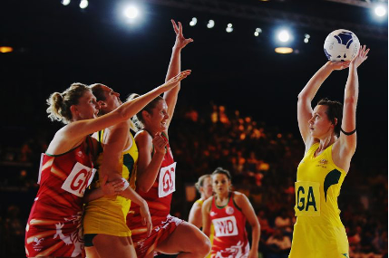

FNetball is one of the world's fastest growing participation sports. It was originally known as 'women's basketball' and was brought to England from America in the early 1900s. The game was first played on grass by women and was essentially the game we now know as netball. Today, the game is played on a hard court divided into thirds, with scoring rings at both ends but no 'backboard' to score off. The balls used are similar to basketball balls, but they are slightly lighter, smaller, and softer in construction. Netball is a non-contact sport in which players must be quick, strong, and agile. A game puts a lot of strain on the body, with players having to do short sprints, hard stops, and twists and turns throughout the game.
Nature of the game
History of Netball
Netball was invented in 1895 at Madame Ostenburg's College in England. Netball's popularity grew in the first half of the twentieth century, with the game being played in many British Commonwealth countries. There were no standard rules for both the nine-a-side and five-a-side versions of the game at the time.
Netball positions
The game is typically played by two teams of seven players, with the goal of outscoring the opponents. Each team member's position is clearly marked on their bib by an abbreviation. Each position in netball is highly specialized, serves a specific purpose, and is restricted to a specific area of the court. Before a point can be scored, the ball must be touched by a player in each third of the court on its way to the shooters.
The netball positions are:
- Goal Shooter (GS)
- Goal Attack (GA)
- Wing Attack (WA)
- Centre (C)
- Wing Defense (WD)
- Goal Defense (GD)
- Goal Keeper (GK)
Benefits of netball
- Burning calories and lowering body fat if played regularly.
- Improves upper body strength, working out key arm muscles.
- Improves hand-eye co-ordination, with precision passing and shooting necessary to succeed.
- Builds up leg muscle strength and stamina due to its mixture of brief bursts of sprinting and longer jogging
- Develops the body's cardiovascular system, with the heart and lungs able to deliver more oxygen to fuel the muscles.
- Improves the body's flexibility and nimbleness, as it requires quick changes of direction and speed